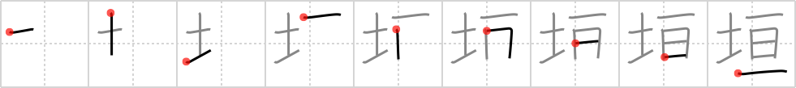

垣
← →
hedge

Reading:
On-Yomi: エン — Kun-Yomi: かき
Heisig story:
The hedge depicted in this frame is the miraculous hedge of briar roses that completely spanned the castle grounds in which Sleeping Beauty lay for a hundred years, so that none but her predestined beloved could find his way through it.
Koohii stories:
1) [Wahlin] 29-8-2006(134): Before the Great Wall of China, there was a dirt hedge that spanned across.
2) [Ninjasha] 20-12-2007(76): The HEDGE of roses growing from the castle grounds fully spanned the castle walls.
3) [Dualta] 10-3-2008(50): The HEDGE spans the GROUNDS of the estate.
4) [calittle] 5-9-2007(23): The entire grounds were spanned by a hedge.
5) [eri401] 31-12-2009(18): The kanji also means a fence. Think of a dirt wall that spans your property. 石垣 = いしがき = stone wall.